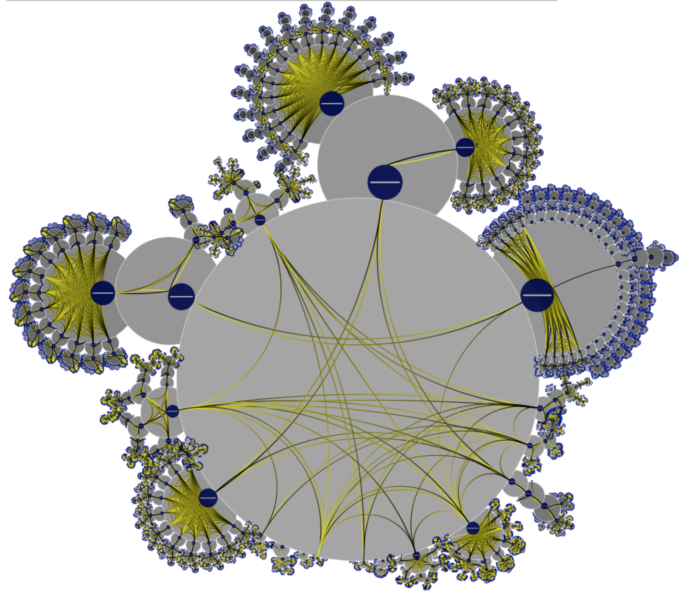

Hierarchical Circular Layouts: Visualizing Structure and Connectivity in Deeply Nested Datasets
The following image shows HCL along with button threading for visualizing the causal relationships between biochemical reations in 20 disease-related pathways. The data is downloaded from Reactome.

The following image shows HCL along with button threading for visualizing prey-predator relations between Birds. The data is downloaded from OneZoom.